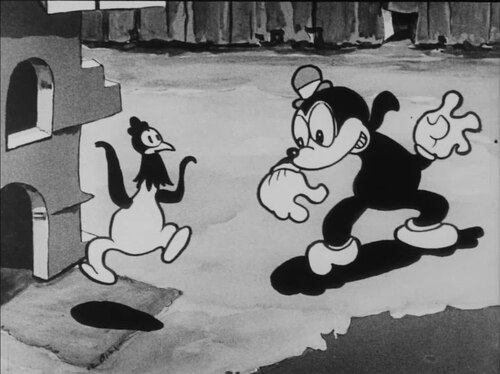
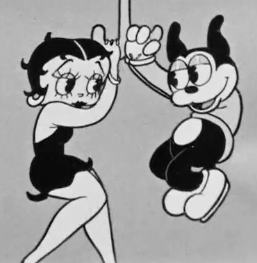
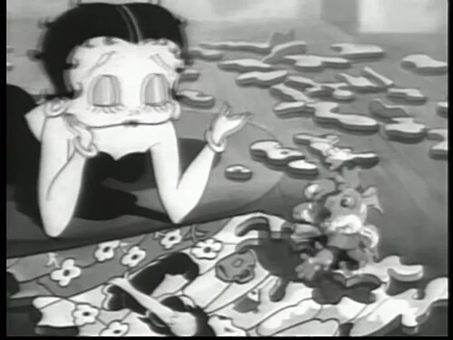
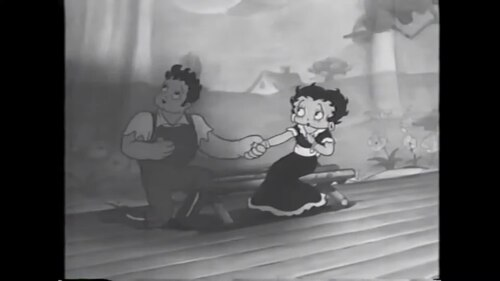
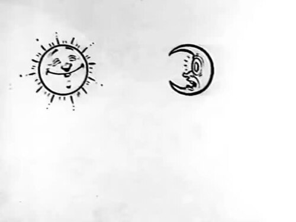
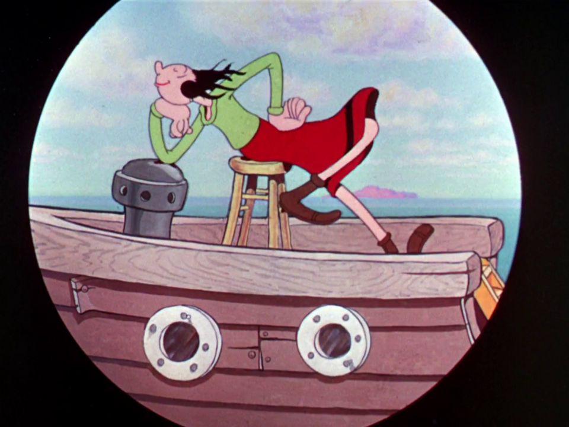

Betty Boop and 1930s Rubber-Hose Cartoon Art Style Expert
6 images kept, 20 dropped. Details in index.md.

Rubber-hose limbs Bimbo and a rooster in a 1930 Fleischer frame, both with smooth tube limbs and white-gloved noodle hands and no elbows or knees. Swing You Sinners! (frame) (1930) · source

Pie-cut eyes and bean shapes Bimbo's black bean body with plain dot-and-lid eyes stands beside Betty's huge lashed eyes, so the two eye conventions sit in one image. Betty Boop and Bimbo (1933) · source

Betty Boop character design Close-up of Betty Boop with an oversized round head, spit curls, heavy-lashed eyes, tiny nose and small mouth. Betty in Blunderland (frame) (1934) · source

Bouncing, pulsing rhythm animation Two characters swaying together on a bench in a 1935 short, a pose pair typical of whole bodies bobbing to the music beat (judge it with the next frame of the same scene). No! No! A Thousand Times No!! (frame) (1935) · source

Surreal metamorphosis and living objects A grinning sun and a crescent moon with human faces, a plain case of the anything-can-come-alive logic of Fleischer shorts. Koko's Earth Control (frame) (1928) · source

Rubber-hose limbs Olive Oyl's limbs bend like green rubber tubes as she drapes over a stool on a 3D model boat. Olive Oyl on a boat (Popeye Meets Sindbad) (1936) · source